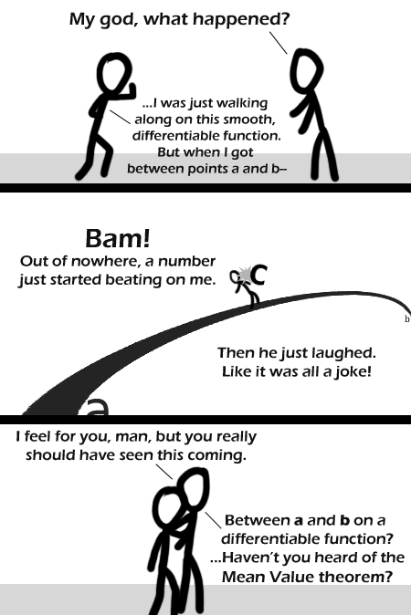

Comic JK 345
When I Feel Like It
⇤
<
?
>
⇥

⇤
<
?
>
⇥
Forum
.
RSS
.
Digg
.
Facebook
.
Reddit
.
Twitter
.
Stumbleupon
Enter your thoughts on number 345 here. Please, no spamming, trolling, or phreaking. I told your mother she was continuous and differentiable and her boobs came out. The function doesn't have to be differentiable. Only continuous. You should be proud of yourself. you are part of the highest echelon of geeky humour of all. >I know, right! I just love this smart humour, even if I don't quite understand the full mechanics behind it (of course that lack of understanding apples more to the jokes about Java Linux and such than the direct math jokes like these). >>Haha I have the opposite! The programming I get, but I had to look up this one ;) >>>same here! >> +1, I get the maths but many of the computing ones escape me. This one was good :) >>>I get both!! >rolled eyes on the pun, lolled hard on the tooltip text >>Screamed at the pun, laughed at the title text... >>I don't get the title text, but I love the punny humour. +100,000 Internets. >>>I thought the whole joke was great. Even if I had no idea where it was leading to until the last panel. I love the maths and programming jokes. well played Kudos for the joke. I didn't laugh, but I really enjoyed how unexpected and forced it was (so-forced-it's-good) Oh I get it! C was "mean" lol probably the best use of the mean value theorum to date, nice. It was easy to tell where the joke was going, but it was still a good one --Treitmaniac. oh wow... BC calc ftw gooo calc lovers!! :P I like RPN. <Random hemi-and/or-semi-unrelated something which might be better deleted> This has to be in maths lectures from now on! Is it sad that I got the math, but not the pun, until I read the comments? >same